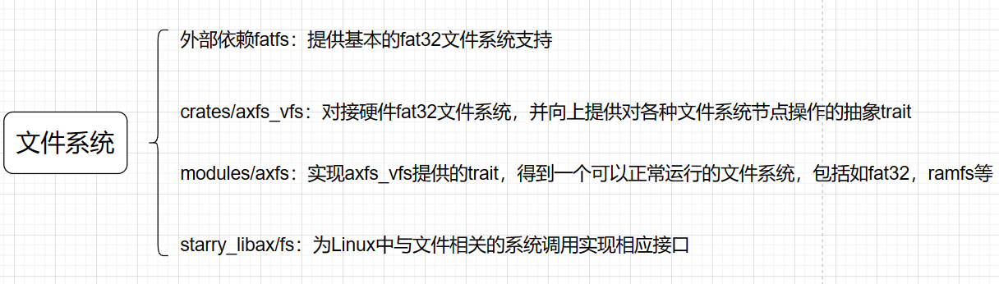

文件系统模块-axfs
介绍文件系统时，不仅需要介绍axfs这个模块，还需要介绍其依赖的crate以及调用这个模块的package，他们共同构成了文件系统的上下层，使得文件系统可以正常发挥作用。
文件系统主要由四个部分组成，分别是外部依赖fatfs、crates/axfs_vfs、modules/axfs以及作为用户库的starry_libax/src/fs。

各自部分的额外补充说明如下
fatfs¶
fatfs作为外部库，提供了一个基础的fat32文件系统。
crates/axfs_vfs¶
axfs_vfs提供了对文件和目录的抽象，为本os实现的任何文件系统都需要实现它的定义的VfsOps特征，同时对应文件系统的file/directory结构体需要实现它的VfsNodeOps特征。
modules/axfs¶
在modules/axfs中：
- axfs::fatfs作为中介连接了文件系统、vfs和块设备三个模块，它封装了外部的fat32提供的文件系统和file/directory，并为它们实现axfs_vfs中的对应特征，同时调用了axfs::dev对硬件进行操作；
- axfs::fops封装了ax_vfs中的各种VfsNode操作，向上提供给axfs::api模块暴露给外部；
- axfs::monolithic_fs是将文件系统适配到宏内核的核心，它提供了文件系统信息Kstat、文件输入输出操作FileIO、文件-虚存映射FileExt等结构体和特征的抽象。
starry_libax/fs¶
在starry_libax中所做的工作主要有：
- 定义文件夹、文件、管道等结构体，并为它们实现monolithic_fs中定义的一些特征，以文件为例：
/// 文件描述符
pub struct FileDesc {
/// 文件路径
pub path: String,
/// 文件
pub file: Arc<Mutex<File>>,
/// 文件打开的标志位
pub flags: OpenFlags,
/// 文件信息
pub stat: Mutex<FileMetaData>,
}
/// 文件在os中运行时的可变信息
pub struct FileMetaData {
/// 最后一次访问时间
pub atime: TimeSecs,
/// 最后一次改变(modify)内容的时间
pub mtime: TimeSecs,
/// 最后一次改变(change)属性的时间
pub ctime: TimeSecs,
}
impl Read for FileDesc {
..
}
impl Write for FileDesc {
..
}
impl Seek for FileDesc {
..
}
impl FileExt for FileDesc {
..
}
/// 为FileDesc实现FileIO trait
impl FileIO for FileDesc {
..
}
- 实现文件链接、文件系统挂载、目录项遍历等功能。
需要注意的是，fat32文件系统不支持硬连接，我们做的工作实际上是在内存里模拟硬连接的过程。在目前的实现里，每个对于文件的访问传入的“文件路径”实际上都是一个虚拟的路径，只是作为KEY存入模拟硬连接的BTreeMap里，映射到它在文件镜像中的实际位置，包括恒等映射。
由于硬连接的一些特性，这种模拟在某些情境下会出现一些问题。
例如，假设A路径是位于硬盘上的A文件的实际路径，B路径则是后创建的一个指向A文件的硬连接，删除A后因为有B存在，实际上只会减少A文件的硬连接数，不会删除实际文件A。这时再创建一个新的A文件时便会报错。
针对这个问题，我们采用过的一个解决办法是对每个实际的文件维护一个记录指向它的硬连接的列表，删除实际路径时，弹出出列表首项并将实际文件移动到对应路径，然后从BTreeMap中删除该项，让它成为新的实际路径。
- 实现所需的各类文件系统相关的系统调用。